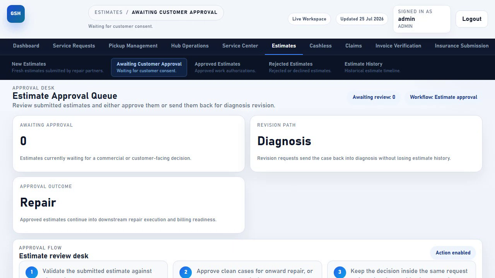
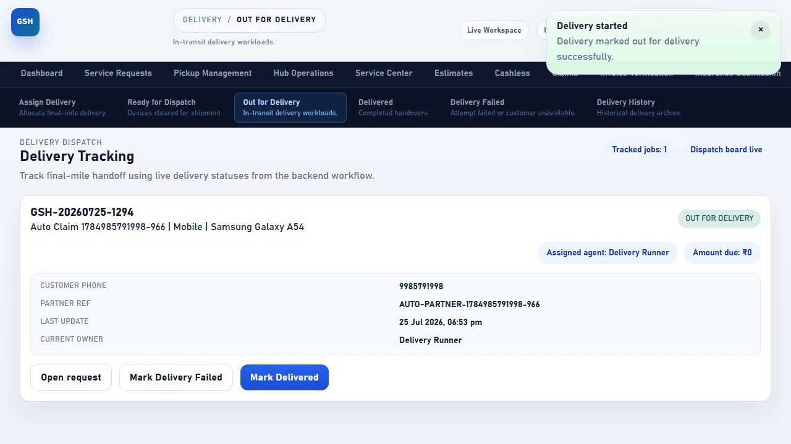
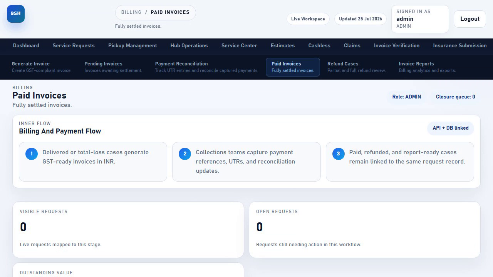

🖥️ What is the Admin Full Workflow?
Gadget Seva Hub's admin console is organised into separate modules — Pickup Management, Hub Operations, Service Center, Estimates, Quality Check, Delivery, Billing — each with its own board and its own set of action buttons. In day-to-day use, different team members work in different modules.
This guide demonstrates that a single request can move continuously through every one of those modules, with each stage's action correctly handing the request off to the next, all the way to a closed, fully paid invoice — proving there's no gap or dead end anywhere in the chain.
🗺️ The 12 Stages at a Glance
Every chip above is a real button click in the admin console, captured on video in one uninterrupted run — see the recording at the bottom of this page.
1️⃣ Assign Pickup
The journey starts the same way as the Pickup Runner Flow: admin allocates the collection to a field runner.
Select the runner, set the pickup schedule, and add notes.
Request status becomes PICKUP_ASSIGNED; the runner link is sent by SMS and WhatsApp.

Pickup Management module test — onboard a runner, assign a request, and track it across every pickup tab
2️⃣ Hub Operations — Receive & Dispatch
Once the runner hands the device over, it's logged into the hub and forwarded on to diagnosis.
Click "Mark Received At Hub" on the request card.
Status becomes RECEIVED_AT_HUB.
Click "Send To Service Center."
Status becomes DIAGNOSIS_IN_PROGRESS — the device is now with the repair team.
Hub Operations module test — receive at hub, verify, and dispatch to service center across every hub tab
3️⃣ Service Center — Submit the Estimate
The service center technician diagnoses the fault and submits a cost estimate directly on the request card.
Fill in the diagnosis summary, parts cost, labour cost, and tax amount.
Status becomes ESTIMATE_PREPARED and the request moves to the approval desk.
Service Center module test — diagnosis, estimate submission, repair, and total-loss requests mapped into every service-center tab
4️⃣ Estimates — Approve
The estimate approval desk is where a commercial decision is made on the cost before repair begins.
Review the submitted estimate against the diagnosis.
Status becomes ESTIMATE_APPROVED — repair can now begin.

Estimates module test — approve and revise estimates from the approval desk
5️⃣ Repair Execution
Repair start and completion are recorded against the request timeline as the technician physically works on the device. This is currently a backend-tracked stage — there isn't a separate admin console button for it yet (every other stage in this journey has one; this is the sole exception), so it's recorded directly via the request status API rather than a UI click.
6️⃣ Quality Check
Before a repaired device can be dispatched, it passes through quality control.
Inspect the repaired device against the reported issue.
Status becomes READY_FOR_DISPATCH.
Quality Check module test — QC failure, rework, and QC pass driven across every quality-check tab
7️⃣ Delivery
The finished device is handed to a delivery agent and tracked to the customer's doorstep.
Pick a delivery agent, schedule, and notes, then click "Assign Drop."
Status becomes DELIVERY_ASSIGNED.
Click "Mark Out For Delivery."
Status becomes DELIVERED once the customer has the device back.

Delivery module test — assign, fail, reassign, and complete delivery across every delivery tab
8️⃣ Billing & Closure
The final leg: turning the delivered repair into a paid, reconciled, closed invoice.
Click "Generate Invoice" — a GST-ready invoice number is created.
Status becomes INVOICED.
Record the payment reference, amount, method, and UTR number, then click "Record Payment."
Mark the payment "RECONCILED" with a remark, then click "Save Reconciliation."
Click "Close Request."
Status becomes CLOSED — the request lifecycle is complete.

📊 Full Status Flow
🧪 How This Was Verified
This journey is covered by an automated end-to-end test in 10-full-workflow.regression.spec.ts that drives the real admin console UI at every stage that has a dedicated button, against the live UAT environment:
- Assigns the pickup via the real Assign Pickup board
- Marks the device received at hub, then dispatches to service center — both via their real buttons
- Fills and submits a real estimate on the Devices Under Inspection card
- Approves the estimate from the real approval desk
- Advances repair start/completion via the status API (the one stage without a dedicated UI button)
- Passes QC via the real "QC Passed" button
- Assigns, dispatches, and delivers via the real Delivery boards
- Generates the invoice, records the payment, saves reconciliation, and closes the request — all via their real buttons
- Confirms the final closed request still has all 10 pickup photos, its invoice number, its payment record, and its full timeline
🎥 Video — Full Admin Console Journey
Complete recorded walkthrough of the automated test above: one request carried continuously from pickup assignment through hub operations, service center, estimate approval, quality check, delivery, and billing closure — all in one uninterrupted run against the live UAT environment.